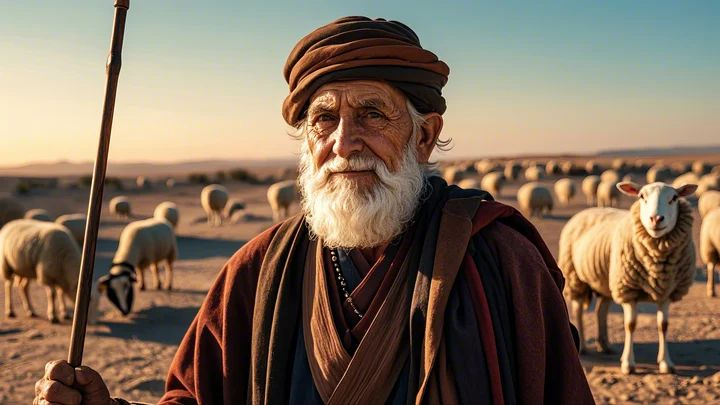
Abraham – The Father of Faith
Abraham’s life teaches us that true faith is not just believing in God’s promises — it’s trusting Him even when the path is unclear. When God told Abraham to leave his homeland and go to an unknown country, he obeyed without hesitation. He didn’t ask for proof. He didn’t demand answers. He simply believed that where God leads, blessings follow.
Abraham’s Life
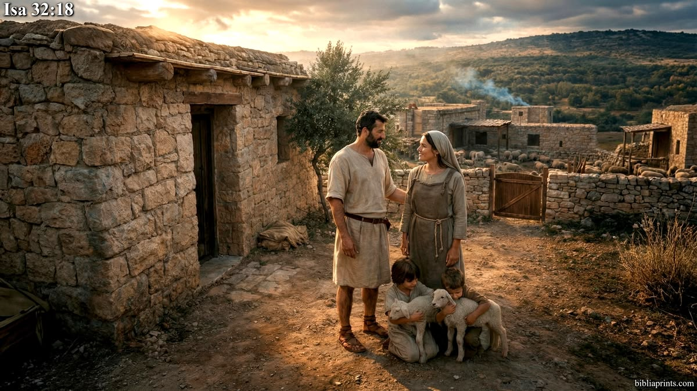
Birth
பிறப்பு
Abraham was originally called Abram. He was born in the ancient city of Ur. This city was located in the ancient region of Mesopotamia. Today, scholars generally believe that its location is within the borders of southern Iraq. Abram is commonly believed to have lived between 2000 and 1800 BC. During that time, the city of Ur was a great and prosperous center of trade, agriculture, education, art, and culture. It was known for its towering ziggurats (temple towers), thriving marketplaces, and advanced urban civilization.
Abraham முதலில் ஆபிராம் (Abram) என்ற பெயரால் அழைக்கப்பட்டார். அவர் Ur என்ற பண்டைய நகரில் பிறந்தார். இந்த ஊர் பண்டைய Mesopotamia பகுதியில் அமைந்திருந்தது. இன்று அந்த இடம் தெற்கு Iraq நாட்டின் எல்லைக்குள் இருப்பதாக அறிஞர்கள் கருதுகின்றனர். ஆபிராம் வாழ்ந்த காலம் கிமு 2000–1800-ஆம் ஆண்டுகளுக்கு இடைப்பட்டதாக பொதுவாகக் கருதப்படுகிறது. அக்காலத்தில் Ur நகரம் மிகப் பெரிய நகரமாகவும், வணிகம், விவசாயம், கல்வி, கலை மற்றும் கலாச்சாரத்தில் சிறந்து விளங்கிய மையமாகவும் இருந்தது. அங்கு உயரமான கோயில்கள் (Ziggurat), செழிப்பான சந்தைகள் மற்றும் மேம்பட்ட நகர வாழ்க்கை காணப்பட்டது.
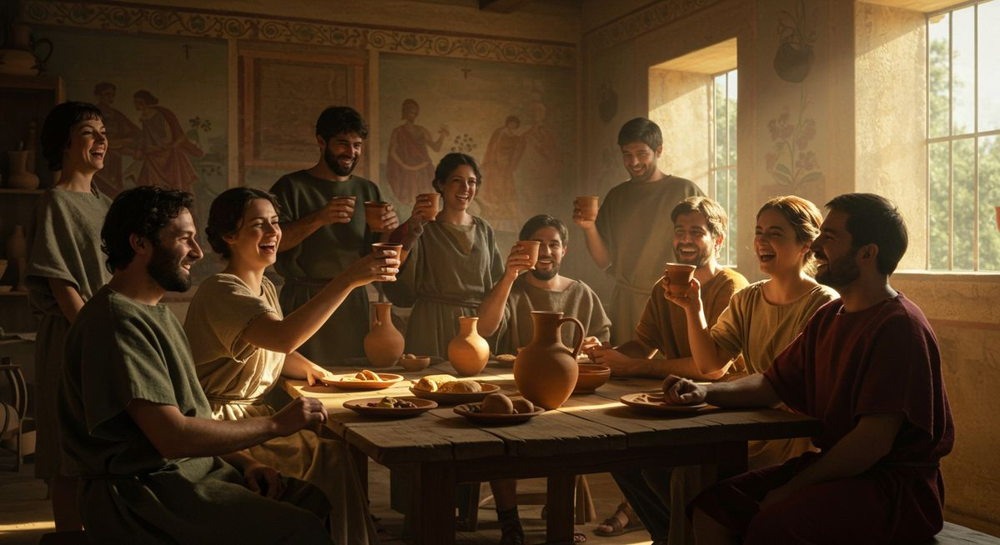
Brothers
சகோதரர்கள்
Abraham's father was Terah. Terah had three sons: Abram, Nahor, and Haran. Haran died in the city of Ur while his father was still alive. Haran had a son named Lot. Later, Lot traveled with Abraham on his journey toward the land of Canaan. Nahor settled elsewhere with his family, and his descendants later played an important role in the biblical narrative. Although the brothers were closely related, God's special calling and covenant were fulfilled through Abraham's life.
Abraham அவர்களின் தந்தை Terah (தேராகு) ஆவார். தேராகுவுக்கு மூன்று மகன்கள் இருந்தனர்: ஆபிராம், Nahor (நாகோர்), மற்றும் Haran (ஆரான்). ஆரான் தனது தந்தை உயிரோடு இருக்கும்போதே Ur நகரில் இறந்தார். ஆரானுக்கு Lot (லோத்து) என்ற மகன் இருந்தார். பின்னர் லோத்து, ஆபிரகாமுடன் சேர்ந்து கானான் தேசத்தை நோக்கிப் பயணம் செய்தார். நாகோர் தனது குடும்பத்துடன் வேறு இடத்தில் குடியேறி, அவரது சந்ததியினரும் பின்னர் வேதாகம வரலாற்றில் முக்கிய பங்கு வகித்தனர். சகோதரர்களிடையே குடும்ப உறவு இருந்தபோதிலும், தேவனுடைய விசேஷ அழைப்பு ஆபிரகாமின் வாழ்க்கையிலேயே நிறைவேறியது.
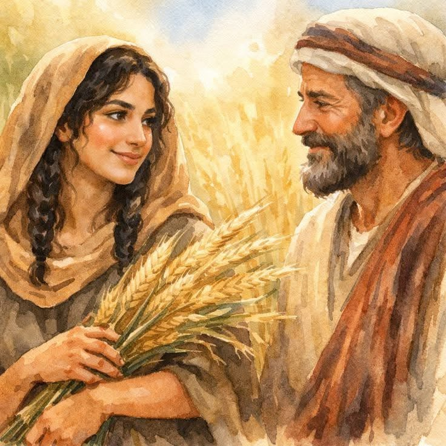
Marriage to Sarai (Sarah)
சாராய் (Sarah) உடன் திருமணம்
Abraham married Sarah, who was originally named Sarai. The Bible describes Sarai as a woman of beauty, wisdom, and faith. She faithfully stood by Abraham throughout his life's journey.
ஆபிரகாம் தனது மனைவியான Sarah (முதலில் சாராய்) என்பவரை திருமணம் செய்தார். சாராய் அழகும், அறிவும், விசுவாசமும் கொண்ட பெண்ணாக வேதாகமத்தில் குறிப்பிடப்படுகிறார். அவர் ஆபிரகாமின் வாழ்க்கைப் பயணத்தில் எப்போதும் துணையாக இருந்தார்.
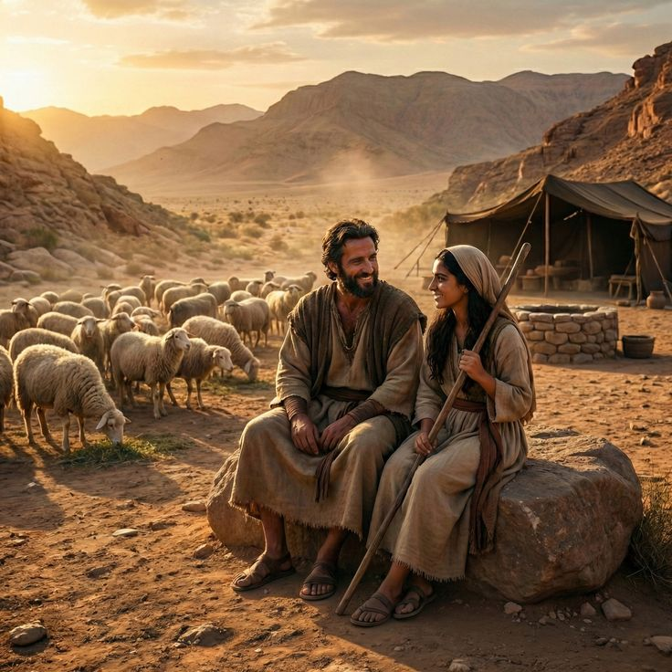
A Childless Life
குழந்தையில்லாத வாழ்க்கை
Many years passed after their marriage, yet Abraham and Sarah had no children. In those days, being childless was considered a great sorrow and even a disgrace to a family. As a result, they lived with deep grief and disappointment for many years. Nevertheless, God promised Abraham, "Your descendants will be as numerous as the stars in the sky and as the sand on the seashore." Although this seemed impossible from a human perspective, Abraham believed God's promise and trusted in His faithfulness.
திருமணமான பல ஆண்டுகள் கடந்தும் ஆபிரகாமுக்கும் சாராவுக்கும் குழந்தை பிறக்கவில்லை. அக்கால சமுதாயத்தில் குழந்தையில்லாதிருப்பது குடும்பத்திற்கு மிகுந்த துயரமாகவும், அவமானமாகவும் கருதப்பட்டது. இதனால் அவர்கள் நீண்ட காலம் மனவேதனையுடன் வாழ்ந்தனர். இருப்பினும், தேவன் ஆபிரகாமிடம், "உன் சந்ததி வானத்து நட்சத்திரங்களைப்போலவும், கடற்கரை மணலைப்போலவும் பெருகும்" என்று வாக்குறுதி அளித்தார். மனிதர்களின் பார்வையில் அது சாத்தியமற்றதாகத் தோன்றினாலும், ஆபிரகாம் தேவனுடைய வாக்குறுதியை விசுவாசித்தார்.
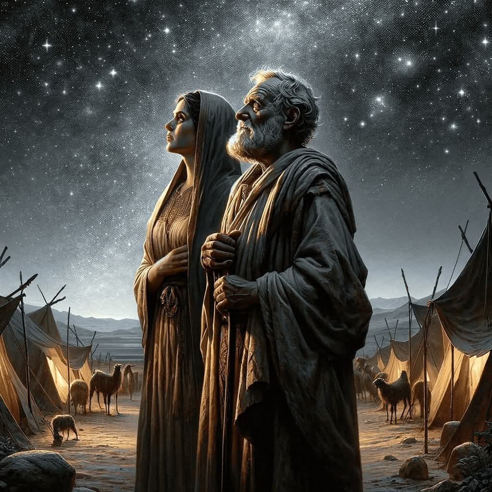
God Calls Abram
தேவன் ஆபிராமை அழைத்தது
The most significant turning point in Abraham's life was when God personally called him. While Abram was living in Haran, God said to him, "Leave your country, your people, and your father's household, and go to the land that I will show you." This was not merely a call to move to another place; it was the beginning of a life of faith, trusting God completely. Abram obeyed God's command without hesitation. Although he did not know what the future held, he trusted God's promise and began his journey in faith. Because of this unwavering faith, Abraham is known as the "Father of Faith" (or "the Father of All Who Believe").
Abraham அவர்களின் வாழ்க்கையில் மிக முக்கியமான திருப்புமுனை, தேவன் அவரை நேரடியாக அழைத்த நிகழ்வாகும். ஆபிராம் Haran நகரில் வாழ்ந்து கொண்டிருந்தபோது, தேவன் அவரிடம், "உன் தேசத்தையும், உன் இனத்தாரையும், உன் தந்தையின் வீட்டையும் விட்டு, நான் உனக்குக் காண்பிக்கும் தேசத்திற்குப் போ" என்று கட்டளையிட்டார். இந்த அழைப்பு ஒரு சாதாரண இடமாற்றம் அல்ல; அது தேவனை முழுமையாக நம்பி வாழும் விசுவாச வாழ்க்கைக்கான தொடக்கமாக இருந்தது. ஆபிராம் தேவன் சொன்னபடியே எந்த தயக்கமும் இல்லாமல் கீழ்ப்படிந்தார். அவர் எதிர்காலம் எப்படி இருக்கும் என்பதை அறியாமலேயே, தேவனுடைய வாக்குறுதியை நம்பி தனது பயணத்தை ஆரம்பித்தார். இதனால் ஆபிரகாம் "விசுவாசத்தின் தந்தை" என்று அழைக்கப்படுகிறார்.
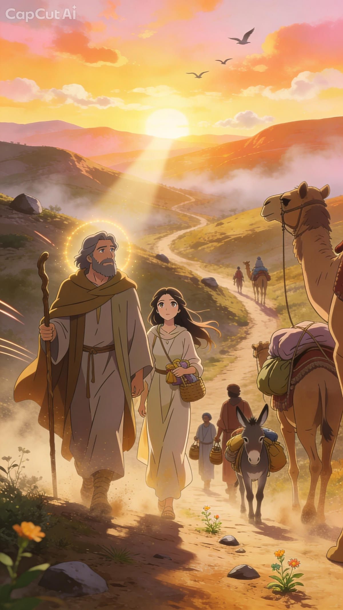
Leaving Haran
ஊரை விட்டு வெளியேறுதல்
In obedience to God's call, Abram departed from Haran with his wife Sarai (Sarah), his nephew Lot, his household, his servants, and all their possessions. By leaving his homeland, his relatives, and the familiar life he had always known to journey toward the land God had promised to show him, Abram demonstrated his deep faith and trust in God. Although the journey seemed uncertain and insecure from a human perspective, Abram moved forward with confidence, believing that God would guide and provide for him every step of the way.
தேவனுடைய அழைப்புக்குக் கீழ்ப்படிந்து, ஆபிராம் தனது மனைவி Sarah (சாராய்), மருமகன் Lot (லோத்து), குடும்பத்தினர், வேலைக்காரர்கள் மற்றும் தங்களுடைய உடைமைகளுடன் Haran நகரிலிருந்து புறப்பட்டார். தனது பிறந்த நாட்டையும், உறவினர்களையும், பழக்கமான வாழ்க்கையையும் விட்டுவிட்டு, தேவன் காண்பிக்கும் புதிய தேசத்தை நோக்கிப் புறப்பட்ட இந்த முடிவு, அவரது ஆழமான விசுவாசத்தை வெளிப்படுத்தியது. மனித கணக்கில் அது பாதுகாப்பற்றதாகத் தோன்றினாலும், தேவன் தம்மை வழிநடத்துவார் என்ற நம்பிக்கையுடன் அவர் முன்னேறினார்.
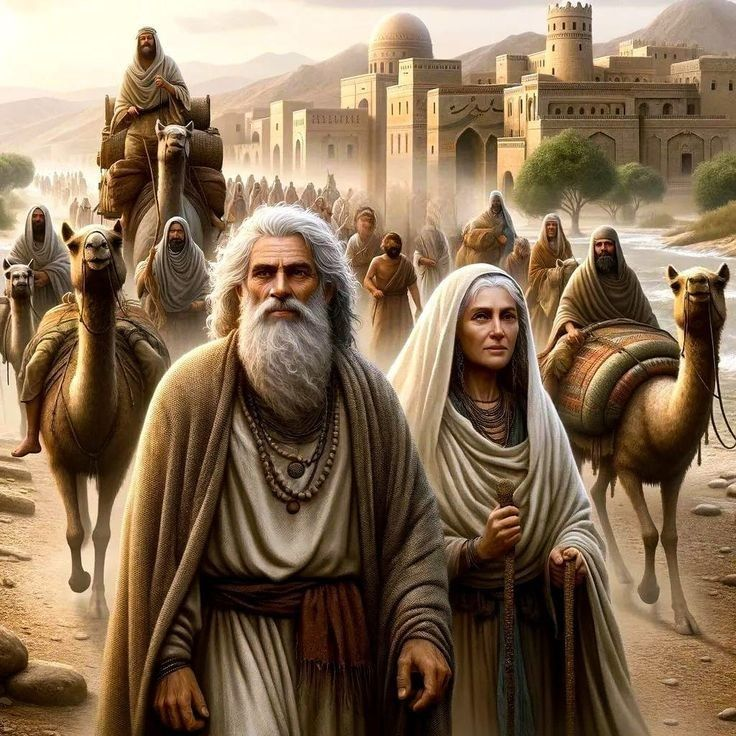
Journey to the Land of Canaan
கானான் தேசத்திற்கு பயணம்
After a long journey, Abram arrived in the land of Canaan. At that time, the land was inhabited by various peoples. God showed Abram the land and said, "To your descendants I will give this land." Wherever Abram went, he built altars to worship the Lord. In particular, he worshiped God at Shechem and Bethel. This demonstrated that Abram gave first place to God in his life, honoring and worshiping Him wherever he journeyed.
ஆபிராம் நீண்ட பயணத்திற்குப் பிறகு Canaan (கானான்) தேசத்தை அடைந்தார். அப்போது அந்த தேசத்தில் பல இன மக்கள் வாழ்ந்து கொண்டிருந்தனர். தேவன் ஆபிராமுக்கு பல இடங்களைக் காண்பித்து, "இந்த தேசத்தை உன் சந்ததிக்குக் கொடுப்பேன்" என்று கூறினார். ஆபிராம் சென்ற இடமெல்லாம் தேவனை ஆராதிப்பதற்காக பலிபீடங்களை கட்டினார். குறிப்பாக Shechem மற்றும் Bethel ஆகிய இடங்களில் அவர் தேவனைத் தொழுதார். இது அவர் தனது வாழ்க்கையில் தேவனுக்கே முதல் இடம் கொடுத்ததை வெளிப்படுத்துகிறது.
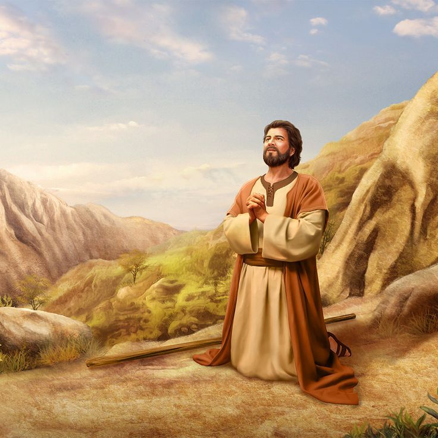
God's First Promise
தேவனுடைய முதல் வாக்குறுதி
God made several important promises to Abram. These promises transformed not only his life but also the course of human history. God promised that He would: Make Abram into a great nation. Make his name great and honorable. Bless those who blessed him and curse those who cursed him. Bring blessing to all the families of the earth through him, a promise that extended to the whole world. Give the land of Canaan to his descendants as their inheritance.
தேவன் ஆபிராமுக்கு மிகவும் முக்கியமான வாக்குறுதிகளை அளித்தார். அவை அவரது வாழ்க்கையையும், உலக வரலாற்றையும் மாற்றியவை. தேவன் ஆபிராமை ஒரு பெரிய ஜாதியாக மாற்றுவேன் என்று வாக்குறுதி அளித்தார். அவரது பெயரை மகிமைப்படுத்துவேன் என்றும் கூறினார். அவரை ஆசீர்வதிப்பவர்களை ஆசீர்வதிப்பேன், அவரை சபிப்பவர்களைச் சபிப்பேன் என்று உறுதியளித்தார். பூமியிலுள்ள எல்லா குடும்பங்களும் உன்மூலம் ஆசீர்வாதம் பெறுவார்கள் என்ற உலகளாவிய வாக்குறுதியையும் அளித்தார். மேலும், கானான் தேசத்தை அவரது சந்ததிக்குச் சுதந்தரமாகக் கொடுப்பேன் என்றும் அறிவித்தார்.
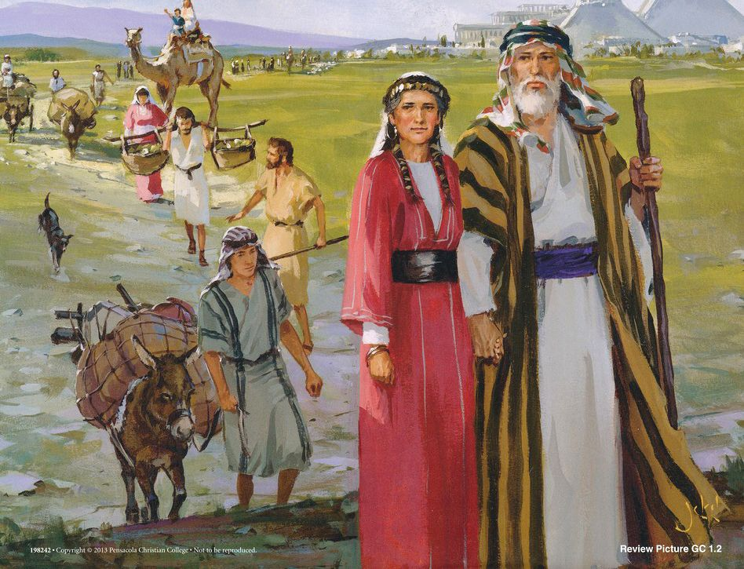
Journey to Egypt
எகிப்து பயணம்
While Abraham was living in the land of Canaan, a severe famine struck the country. Because of the lack of rain, agriculture was greatly affected, and food became scarce. In these circumstances, Abram decided to travel temporarily to Egypt in order to protect his family and his livestock. At that time, Egypt had an abundant food supply because of the Nile River, so during times of famine many people went there for survival. Abram also traveled there with his family, not to settle permanently, but to stay only until the famine had ended.
Abraham கானான் தேசத்தில் வாழ்ந்து கொண்டிருந்தபோது, அந்த நாட்டில் கடுமையான பஞ்சம் ஏற்பட்டது. மழையின்மை காரணமாக விவசாயம் பாதிக்கப்பட்டது; உணவுப் பற்றாக்குறையும் அதிகரித்தது. இந்தச் சூழ்நிலையில், தனது குடும்பத்தினரையும், கால்நடைகளையும் பாதுகாப்பதற்காக ஆபிராம் தற்காலிகமாக Egypt நாட்டிற்குச் செல்ல முடிவு செய்தார். அந்தக் காலத்தில் நைல் நதியின் காரணமாக எகிப்தில் உணவுப் பொருட்கள் கிடைத்ததால், பஞ்ச காலங்களில் பலரும் அங்கு செல்வது வழக்கமாக இருந்தது. ஆபிராமும் தனது குடும்பத்துடன் அங்கு குடியேறாமல், பஞ்சம் முடியும் வரை தங்குவதற்காகச் சென்றார்.
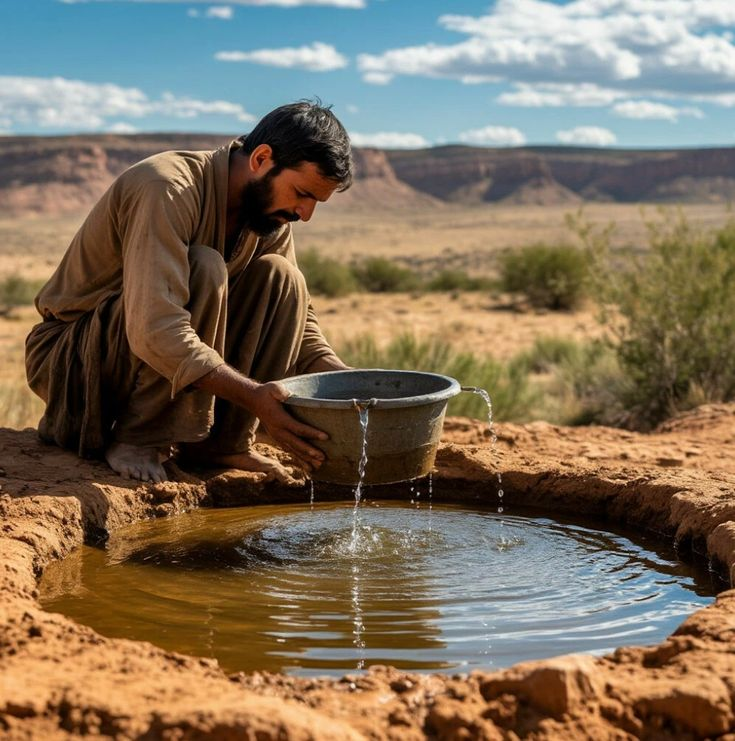
The Famine
பஞ்சம்
The famine in the land of Canaan was extremely severe. Food became scarce, grazing lands dried up, and there was not enough pasture to feed the livestock. During this difficult time, Abram traveled to Egypt to protect his family and provide for their needs. This event reminds us that even people of faith can experience trials and hardships in life. Although Abram had received God's call and promises, he still had to face difficulties and challenges along his journey.
கானான் தேசத்தில் ஏற்பட்ட பஞ்சம் மிகவும் கடுமையானதாக இருந்தது. உணவு தட்டுப்பாடு, மேய்ச்சல் நிலங்களின் பற்றாக்குறை மற்றும் கால்நடைகளுக்கான தீவனமின்மை ஆகியவை மக்களின் வாழ்க்கையைப் பாதித்தன. இந்த நெருக்கடியான நேரத்தில் ஆபிராம் தனது குடும்பத்தைப் பாதுகாக்க எகிப்துக்குச் சென்றார். இந்தச் சம்பவம், விசுவாசமுள்ளவர்களுக்கும் வாழ்க்கையில் சோதனைகள் வரலாம் என்பதை நினைவூட்டுகிறது. தேவனுடைய அழைப்பைப் பெற்றிருந்தாலும், ஆபிராம் சிரமங்களையும் எதிர்கொள்ள வேண்டியிருந்தது.
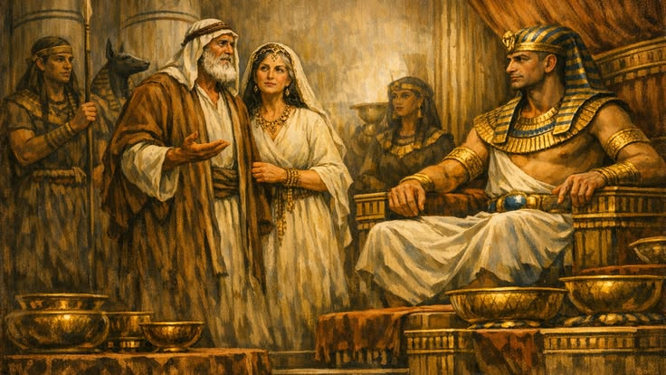
The Pharaoh Incident
பார்வோன் சம்பவம்
Before entering Egypt, Abram was afraid that the Egyptians might kill him because his wife Sarai (Sarah) was very beautiful. So he said to her, "Please say that you are my sister, and not my wife." When they arrived in Egypt, the officials noticed Sarai's beauty and brought her into Pharaoh's palace. In return, Abram was given sheep, cattle, donkeys, camels, and many other possessions. However, because Abram had hidden the truth, this situation later developed into a serious problem.
எகிப்திற்குள் செல்லும் முன், ஆபிராம் தனது மனைவி Sarah (சாராய்) மிகவும் அழகானவர் என்பதால், எகிப்தியர்கள் தன்னைக் கொன்று சாராயை எடுத்துக்கொள்ளக்கூடும் என்று பயந்தார். எனவே, "நீ என் மனைவி என்று சொல்லாமல், என் சகோதரி என்று சொல்" என்று சாராயிடம் கேட்டார். அவர்கள் எகிப்தை அடைந்தபோது, சாராயின் அழகைக் கண்ட அதிகாரிகள் அவரைப் Pharaoh (பார்வோன்) அரண்மனைக்கு அழைத்துச் சென்றனர். இதற்குப் பதிலாக ஆபிராமுக்கு ஆடுகள், மாடுகள், கழுதைகள், ஒட்டகங்கள் மற்றும் பல செல்வங்கள் வழங்கப்பட்டன. ஆனால் ஆபிராம் உண்மையை மறைத்திருந்ததால், இந்த நிகழ்வு பின்னர் பெரிய பிரச்சினையாக மாறியது.
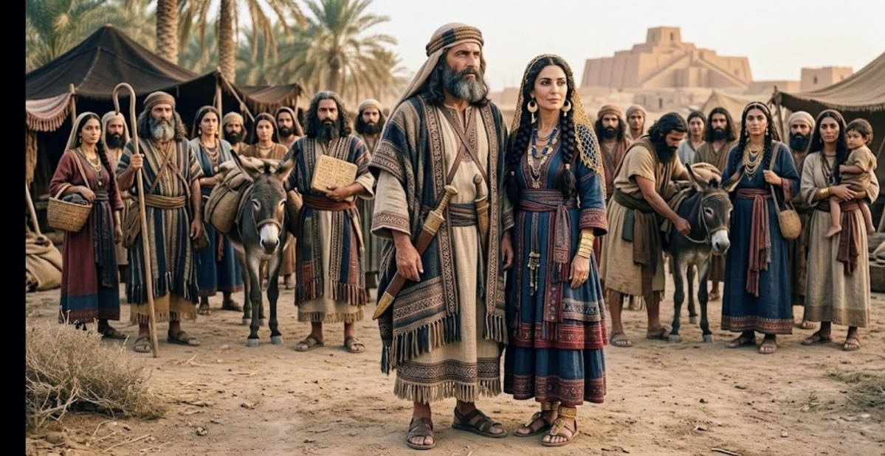
God Protected Sarai
தேவன் பாதுகாத்தது
Even though Abram had made a mistake, God did not forget His covenant with him. To protect Sarai, God sent severe plagues upon Pharaoh and his household. When Pharaoh discovered the reason for these plagues, he summoned Abram and said, "Why didn't you tell me that she was your wife?" Then Pharaoh returned Sarai to Abram and sent them away from Egypt safely, along with all their possessions.
ஆபிராம் தவறு செய்திருந்தபோதிலும், தேவன் தனது உடன்படிக்கையை மறக்கவில்லை. சாராயைப் பாதுகாப்பதற்காக தேவன் பார்வோனின் அரண்மனையிலும் அவரது குடும்பத்தினரிடமும் கடுமையான வாதைகளை அனுப்பினார். அதன் காரணத்தை அறிந்த பார்வோன், ஆபிராமை அழைத்து, "ஏன் இவர் உன் மனைவி என்பதை என்னிடம் சொல்லவில்லை?" என்று கேட்டார். பின்னர் சாராயை ஆபிராமிடம் திருப்பிக் கொடுத்து, அவர்களையும் அவர்களுடைய எல்லா உடைமைகளையும் பாதுகாப்பாக எகிப்திலிருந்து அனுப்பிவைத்தார்.
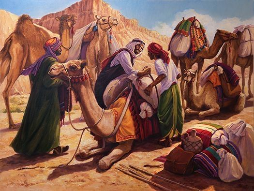
Separation from Lot
லோத்துடன் பிரிவு
After returning from Egypt, Abraham and his nephew Lot lived in the land of Canaan. By that time, both of them had acquired great wealth, including large flocks of sheep, herds of cattle, camels, and other livestock. Because their possessions and animals had increased so much, the land could no longer support them living together in the same area. Abraham was a man who valued peace and did not want conflict or division. So he said to Lot, "Let there be no quarrel between you and me, or between your herdsmen and mine, for we are relatives. Is not the whole land before you? Please separate from me. If you go to the left, I will go to the right; if you go to the right, I will go to the left." This response demonstrates Abraham's humility, generosity, and desire to maintain peace.
Abraham மற்றும் அவரது மருமகனான Lot இருவரும் எகிப்திலிருந்து திரும்பி Canaan தேசத்தில் வாழ்ந்தனர். அப்போது இருவருக்கும் ஏராளமான ஆடுகள், மாடுகள், ஒட்டகங்கள் மற்றும் பிற கால்நடைகள் இருந்தன. அவர்களின் செல்வமும், கால்நடைகளின் எண்ணிக்கையும் மிகவும் அதிகரித்ததால், ஒரே பகுதியில் வாழ்வது சிரமமாகியது. ஆபிரகாம் சண்டையையும் பிரிவினையையும் விரும்பாதவர். எனவே அவர் லோத்திடம், "நமக்குள் சண்டை வேண்டாம்; நாம் சகோதரர்கள். தேசம் முழுவதும் உன் முன் இருக்கிறது. நீ இடப்பக்கம் சென்றால் நான் வலப்பக்கம் செல்வேன்; நீ வலப்பக்கம் சென்றால் நான் இடப்பக்கம் செல்வேன்" என்று சமாதானமாகக் கூறினார். இது ஆபிரகாமின் தாழ்மையையும், சமாதான மனப்பான்மையையும் வெளிப்படுத்துகிறது.
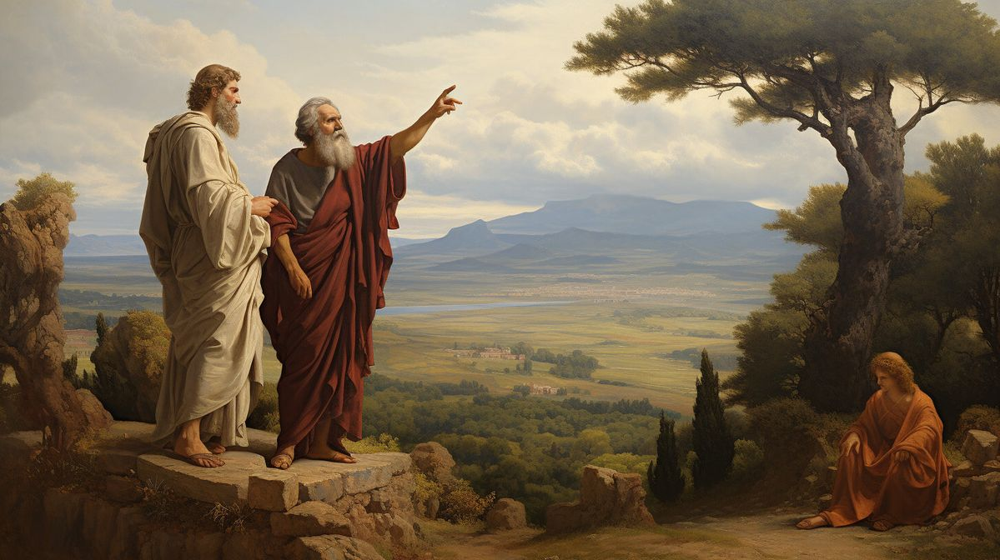
The Shepherds' Quarrel
மேய்ப்பர்களின் சண்டை
A dispute arose between Abraham's shepherds and Lot's shepherds over the use of grazing land and water. Because their flocks and herds had become so large, the available pasture was no longer sufficient for both groups. To prevent this disagreement from growing into a major conflict, Abraham took the initiative to make peace. Even though he was the elder and the head of the family, he graciously gave Lot the first choice of the land. This act revealed Abraham's selflessness, humility, and complete trust in God to provide for his future.
ஆபிரகாமின் மேய்ப்பர்களுக்கும், லோத்தின் மேய்ப்பர்களுக்கும் மேய்ச்சல் நிலம் மற்றும் தண்ணீரைப் பயன்படுத்துவதில் கருத்து வேறுபாடு ஏற்பட்டது. கால்நடைகள் அதிகமாக இருந்ததால், கிடைத்த நிலம் போதுமானதாக இல்லை. இந்தச் சிறிய கருத்து வேறுபாடு பெரிய பிரச்சினையாக மாறாமல் இருக்க ஆபிரகாம் முன்வந்து சமாதானத்தைத் தேர்ந்தெடுத்தார். தனது வயதிலும், குடும்பத் தலைவராக இருந்த நிலையிலும், முதலில் தேர்வு செய்யும் உரிமையை லோத்துக்கே வழங்கினார். இது அவரது தன்னலமற்ற குணத்தையும், தேவன் மீது வைத்திருந்த நம்பிக்கையையும் காட்டுகிறது.
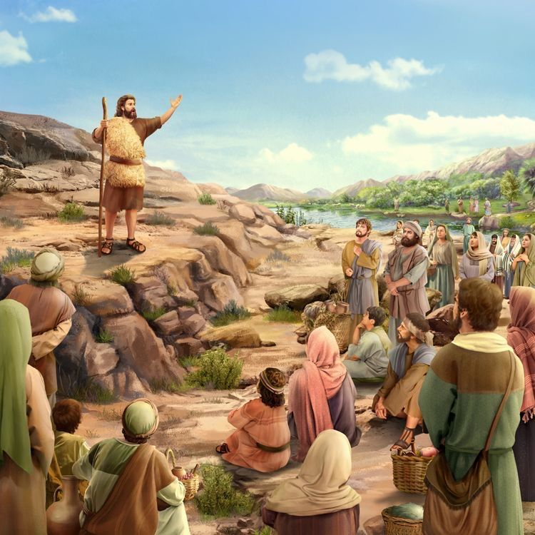
Lot Chose the Jordan Valley
யோர்தான் பள்ளத்தாக்கை லோத் தேர்ந்தெடுத்தது
When Lot looked around, he saw that the entire Jordan Valley was well watered, lush, and fertile. It appeared like the garden of the Lord and like the rich land of Egypt. For this reason, Lot chose the Jordan Valley for himself, thinking primarily of its material advantages. He then pitched his tents near the city of Sodom. However, the people of Sodom were exceedingly wicked and lived in rebellion against God. Lot's decision eventually brought many troubles upon his family. Meanwhile, Abraham remained in the land of Canaan, continuing to walk faithfully in the path that God had shown him.
Lot சுற்றிலும் பார்த்தபோது, Jordan Valley (யோர்தான் பள்ளத்தாக்கு) முழுவதும் பசுமையாகவும், நீர்வளம் நிறைந்ததாகவும் இருந்தது. அது தேவனுடைய தோட்டத்தைப் போலவும், Egypt நாட்டின் வளமான பகுதிகளைப் போலவும் காணப்பட்டது. இதனால் லோத் தனது நன்மையை மட்டுமே கருதி யோர்தான் பள்ளத்தாக்கைத் தேர்ந்தெடுத்தார். பின்னர் அவர் Sodom நகரத்திற்கு அருகில் கூடாரமிட்டார். ஆனால் சோதோம் நகர மக்கள் மிகவும் பொல்லாதவர்களாகவும், தேவனுக்கு விரோதமாக வாழ்ந்தவர்களாகவும் இருந்தனர். லோத்தின் இந்தத் தேர்வு பின்னர் அவரது குடும்பத்திற்கு பல துன்பங்களை ஏற்படுத்தியது. ஆபிரகாம் கானான் தேசத்தில் தங்கி, தேவன் காட்டிய வழியில் தொடர்ந்து நடந்தார்.
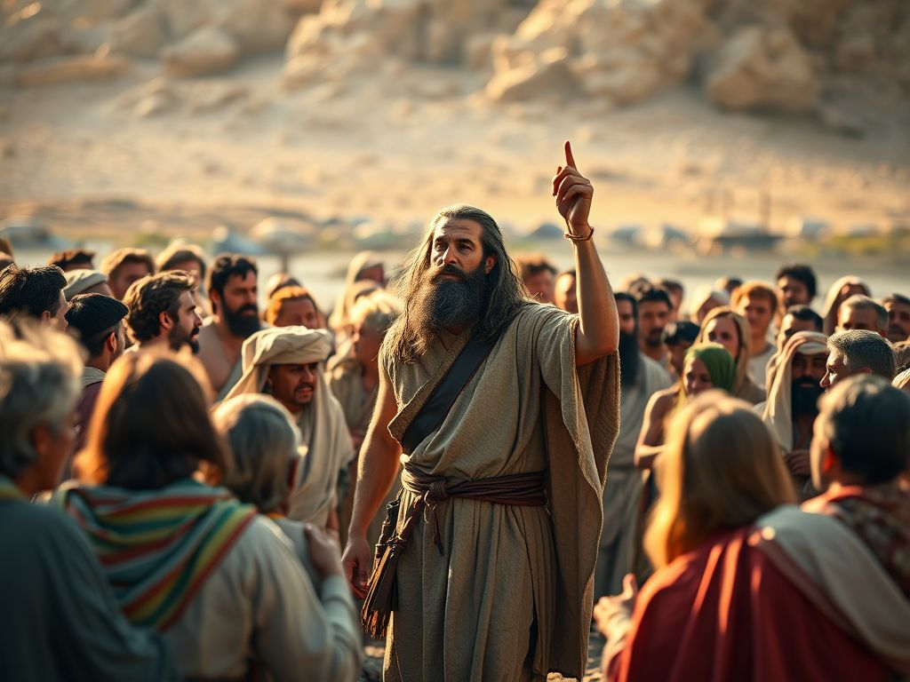
God's Second Promise
தேவனின் இரண்டாவது வாக்குறுதி
After Lot separated from him, God spoke to Abraham again, saying, "Lift up your eyes and look northward, southward, eastward, and westward. All the land that you see I will give to you and to your descendants forever." God also promised, "I will make your descendants like the dust of the earth. If anyone could count the dust of the earth, then your descendants could also be counted." In other words, just as the dust of the earth is too numerous to count, God promised that Abraham's descendants would become countless. Then God said, "Arise, walk through the length and the breadth of the land, for I am giving it to you." Abraham obeyed God's command. He settled near Hebron, by the great trees of Mamre, and there he built an altar to the Lord and worshiped Him.
லோத் பிரிந்த பிறகு, தேவன் மீண்டும் ஆபிரகாமிடம் பேசினார். "உன் கண்களை உயர்த்திப் பார்; வடக்கு, தெற்கு, கிழக்கு, மேற்கு ஆகிய திசைகளில் நீ காணும் தேசம் அனைத்தையும் உனக்கும் உன் சந்ததிக்கும் என்றென்றும் கொடுப்பேன்" என்று வாக்குறுதி அளித்தார். மேலும், "உன் சந்ததியை பூமியின் தூசிபோல் பெருகப்பண்ணுவேன்" என்றும் கூறினார். பூமியின் தூசியை எண்ண முடியாததுபோல, ஆபிரகாமின் சந்ததியையும் எண்ண முடியாத அளவுக்கு பெருகச் செய்வேன் என்று தேவன் உறுதியளித்தார். அதன்பின், "எழுந்து, இந்த தேசத்தை நீளத்திலும் அகலத்திலும் சுற்றிப் பார்; அதை உனக்குக் கொடுக்கிறேன்" என்று தேவன் கட்டளையிட்டார். ஆபிரகாம் அதற்குக் கீழ்ப்படிந்து Hebron பகுதியில் குடியேறி, அங்குள்ள Mamre என்னும் இடத்தில் தேவனுக்குப் பலிபீடம் கட்டி அவரை ஆராதித்தார்.
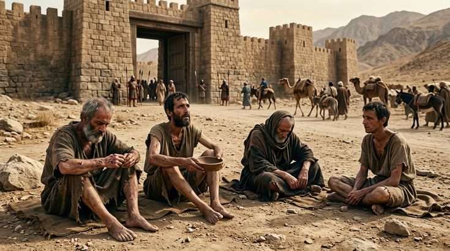
Rescuing Lot
லோத்தை மீட்டது
While Lot was living near the city of Sodom, a great war broke out in that region. As a result of the conflict, Lot, his family, and all their possessions were taken captive by the enemy kings. When Abraham heard what had happened, he immediately took action to rescue his nephew. Rather than thinking only of his own safety and interests, Abraham accepted the responsibility of saving his relative. This demonstrates his love, courage, and strong sense of family responsibility.
Lot சோதோம் நகரத்திற்கு அருகில் குடியேறியிருந்தபோது, அந்தப் பகுதியில் ஒரு பெரிய போர் ஏற்பட்டது. அந்தப் போரின் விளைவாக லோத்தும், அவரது குடும்பத்தினரும், அவர்களுடைய உடைமைகளும் எதிரி ராஜாக்களால் சிறைபிடிக்கப்பட்டனர். இந்தச் செய்தியை அறிந்த Abraham, தனது மருமகனை மீட்க உடனடியாக நடவடிக்கை எடுத்தார். ஆபிரகாம் தனது சொந்த நலனை மட்டும் கருதாமல், உறவினரின் உயிரைக் காப்பாற்றும் பொறுப்பை ஏற்றார். இது அவரது அன்பு, தைரியம் மற்றும் குடும்பப் பொறுப்புணர்வை வெளிப்படுத்துகிறது.
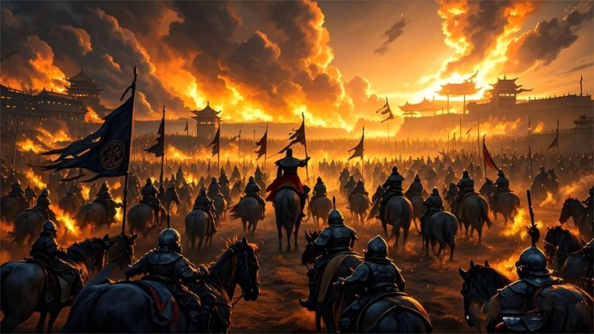
The War of the Four Kings
நான்கு ராஜாக்களின் போர்
In those days, a coalition of four kings, led by Chedorlaomer, went to war against five kings who had previously been paying tribute to them. In the battle, the kings of Sodom and Gomorrah were defeated. The victorious kings plundered the wealth and food supplies of both cities. They also took Lot, who was living in Sodom, along with his family and possessions, and carried them away as captives. As soon as Abraham received news of what had happened, he did not remain idle. He immediately resolved to rescue Lot.
அந்தக் காலத்தில் Chedorlaomer என்ற ராஜாவின் தலைமையில் நான்கு ராஜாக்கள் கூட்டணி அமைத்தனர். அவர்கள் பல ஆண்டுகளாக தங்களுக்கு வரி செலுத்தி வந்த ஐந்து ராஜாக்களை எதிர்த்து போர் செய்தனர். இந்தப் போரில் Sodom மற்றும் Gomorrah ஆகிய நகரங்களின் ராஜாக்கள் தோல்வியடைந்தனர். வெற்றி பெற்ற நான்கு ராஜாக்கள் சோதோம் மற்றும் கொமோராவின் செல்வங்களையும், உணவுப் பொருட்களையும் கொள்ளையடித்தனர். மேலும் சோதோமில் வாழ்ந்த லோத்தையும் அவரது குடும்பத்தினரையும் சிறைபிடித்துச் சென்றனர். இந்தச் சம்பவம் ஆபிரகாமிடம் தெரிவிக்கப்பட்டவுடன், அவர் அமைதியாக இருக்காமல் உடனடியாக லோத்தை மீட்கத் தீர்மானித்தார்.
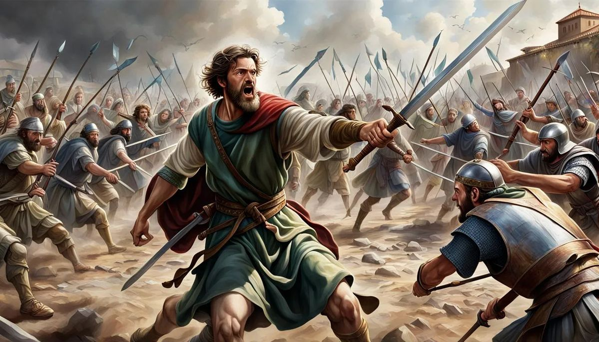
Abram's Victory
ஆபிராமின் வெற்றி
Abraham gathered 318 trained men born in his household and pursued the enemy kings. Using a wise strategy, he launched a surprise attack during the night and defeated their forces. With God's help, Abraham achieved a complete victory. He rescued Lot, his family, the women, and all the other captives safely. He also recovered all the possessions that had been taken by the enemy. The Bible emphasizes that this victory was not due merely to Abraham's military strength, but because God's protection and guidance were with him.
ஆபிரகாம் தனது வீட்டில் பயிற்சி பெற்ற 318 வீரர்களை அழைத்துக் கொண்டு எதிரி ராஜாக்களைத் துரத்திச் சென்றார். இரவு நேரத்தில் புத்திசாலித்தனமான திட்டத்துடன் தாக்குதல் நடத்தி, எதிரிகளின் படையைத் தோற்கடித்தார். தேவனுடைய உதவியால் ஆபிரகாம் முழு வெற்றியைப் பெற்றார். அவர் லோத்தையும், அவரது குடும்பத்தினரையும், பெண்களையும், மற்ற கைதிகளையும் பாதுகாப்பாக மீட்டார். கொள்ளையடிக்கப்பட்ட அனைத்து உடைமைகளையும் திரும்பக் கொண்டு வந்தார். இந்த வெற்றி, ஆபிரகாமின் இராணுவ வலிமையால் மட்டுமல்ல; தேவனுடைய பாதுகாப்பும் வழிநடத்துதலும் அவருடன் இருந்ததாலேயே கிடைத்தது என்பதை வேதாகமம் வலியுறுத்துகிறது.
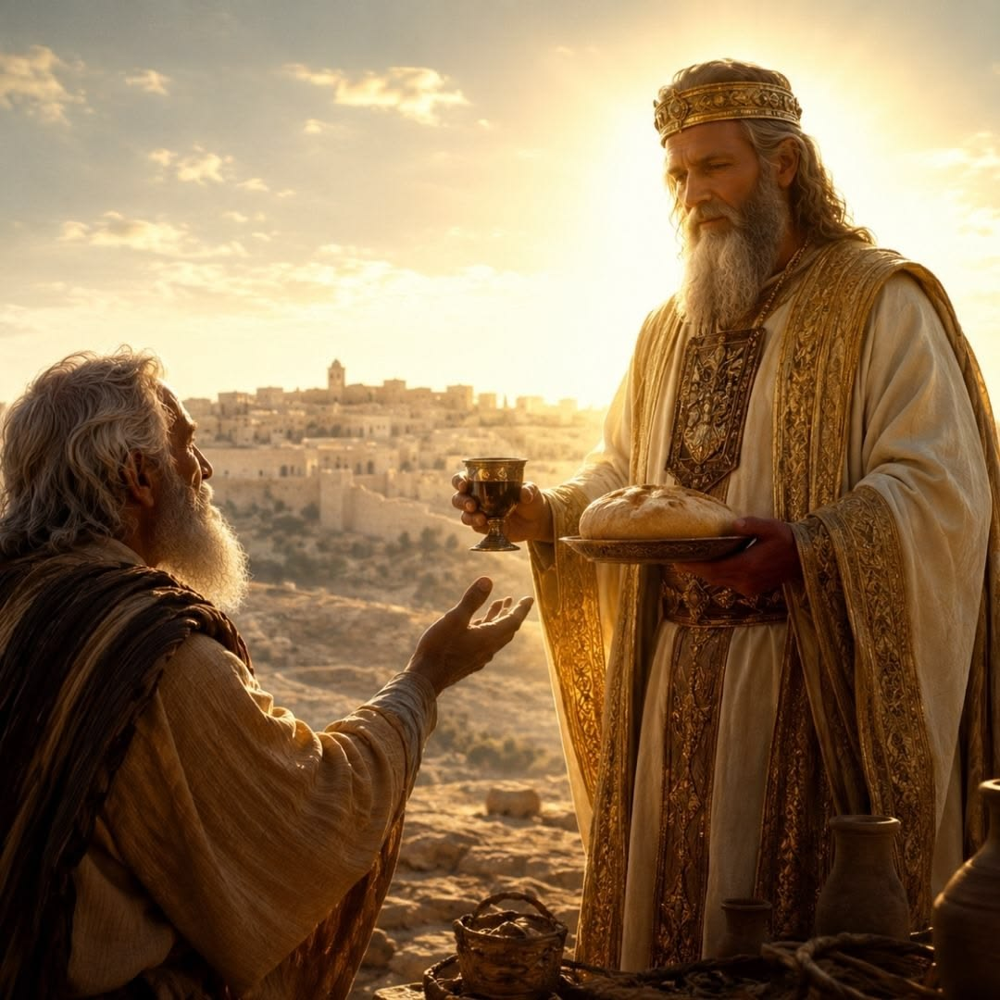
Melchizedek's Blessing
மெல்கிசேதேக்கின் ஆசீர்வாதம்
After returning victorious from the battle, Abram was met by Melchizedek, who was both a king and a priest. He was the king of Salem and the priest of God Most High. Melchizedek brought out bread and wine to welcome Abram and blessed him, saying: "Blessed be Abram by God Most High, Creator of heaven and earth. And blessed be God Most High, who has delivered your enemies into your hand." After receiving this blessing, Abram gave Melchizedek a tenth (a tithe) of everything he had recovered from the battle. This is recorded in the Bible as the first instance of giving a tithe.
போரில் வெற்றி பெற்று திரும்பிய ஆபிரகாமை Melchizedek என்ற ராஜாவும் ஆசாரியரும் சந்தித்தார். அவர் Salem நகரத்தின் ராஜாவாகவும், உன்னதமான தேவனின் ஆசாரியராகவும் இருந்தார். மெல்கிசேதேக்கு அப்பமும் திராட்சரசமும் கொண்டு வந்து ஆபிரகாமை வரவேற்று, "வானத்தையும் பூமியையும் உண்டாக்கின உன்னதமான தேவனால் ஆபிரகாம் ஆசீர்வதிக்கப்படுவாராக; உன் எதிரிகளை உன் கையில் ஒப்புக்கொடுத்த உன்னதமான தேவன் ஸ்தோத்திரிக்கப்படுவாராக" என்று ஆசீர்வதித்தார். இந்த ஆசீர்வாதத்தைப் பெற்ற ஆபிரகாம், போரில் கிடைத்த கொள்ளைப் பொருட்களில் பத்தில் ஒரு பங்கை (தசமபாகம்) மெல்கிசேதேக்குக்குக் கொடுத்தார். இது வேதாகமத்தில் தசமபாகம் கொடுக்கப்பட்ட முதல் நிகழ்வாகக் குறிப்பிடப்படுகிறது.
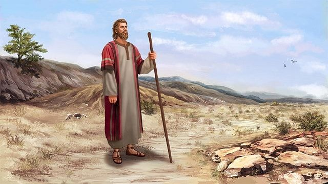
God's Covenant
தேவனுடைய உடன்படிக்கை
One of the most significant events in Abraham's life was when God made a covenant with him. Abraham had been waiting for many years for God's promise to be fulfilled, yet he still had no child. This caused questions and concerns to arise in his heart. Even so, God reaffirmed His promise and strengthened Abraham's faith. God said to Abraham, "Do not be afraid, Abram. I am your shield and your exceedingly great reward." Through these words, God assured Abraham that He would always protect him and richly bless his life.
Abraham அவர்களின் வாழ்க்கையில் மிக முக்கியமான நிகழ்வுகளில் ஒன்று, தேவன் அவருடன் உடன்படிக்கை (Covenant) செய்ததாகும். ஆபிரகாம் பல ஆண்டுகளாக தேவனுடைய வாக்குறுதிக்காகக் காத்திருந்தார். ஆனால் அவருக்கு இன்னும் குழந்தை பிறக்கவில்லை. இதனால் அவர் மனதில் கேள்விகள் எழுந்தன. இருந்தாலும், தேவன் தனது வாக்குறுதியை மீண்டும் உறுதிப்படுத்தி, ஆபிரகாமின் விசுவாசத்தை பலப்படுத்தினார். தேவன் ஆபிரகாமிடம், "பயப்படாதே; நான் உனக்குக் கேடயமும், மிகப்பெரிய பலனும் ஆக இருக்கிறேன்" என்று கூறினார். இது தேவன் அவரை எப்போதும் பாதுகாத்து, அவருடைய வாழ்க்கையை ஆசீர்வதிப்பார் என்ற உறுதியைக் காட்டுகிறது.
Descendants Like the Stars
நட்சத்திரங்களைப் போல சந்ததி
Abraham said to God, "I still have no child. Since I remain childless, a servant born in my household will be my heir." But God replied, "This man will not be your heir. Your own son will be your heir." Then the Lord took Abraham outside and said, "Look up at the sky and count the stars—if indeed you can count them. So shall your descendants be." Although this promise seemed impossible from a human perspective, Abraham completely trusted God. The Bible says: "Abraham believed the Lord, and He credited it to him as righteousness." This verse reveals one of the foundational truths of the Bible: righteousness comes through faith in God.
ஆபிரகாம் தேவனிடம், "எனக்கு இன்னும் குழந்தை இல்லை; என் வீட்டில் பிறந்த ஒரு வேலைக்காரன்தான் என் வாரிசாக இருப்பான்" என்று கூறினார். அதற்கு தேவன், "அவன் உன் வாரிசு அல்ல; உன் சொந்த மகனே உன் வாரிசாக இருப்பான்" என்று தெளிவாக வாக்குறுதி அளித்தார். பின்னர் தேவன் ஆபிரகாமை வெளியே அழைத்துச் சென்று, "வானத்தை நோக்கிப் பார். நட்சத்திரங்களை எண்ண முடியுமானால் எண்ணிப்பார்; உன் சந்ததியும் அப்படியே எண்ண முடியாத அளவுக்கு பெருகும்" என்று கூறினார். இந்த வாக்குறுதி மனிதக் கணக்கில் சாத்தியமற்றதாகத் தோன்றினாலும், ஆபிரகாம் தேவனை முழுமையாக விசுவாசித்தார். வேதாகமம், "ஆபிரகாம் கர்த்தரை விசுவாசித்தான்; அது அவனுக்கு நீதியாக எண்ணப்பட்டது" என்று குறிப்பிடுகிறது. இந்த வசனம் விசுவாசத்தின் அடிப்படை உண்மையை வெளிப்படுத்துகிறது.
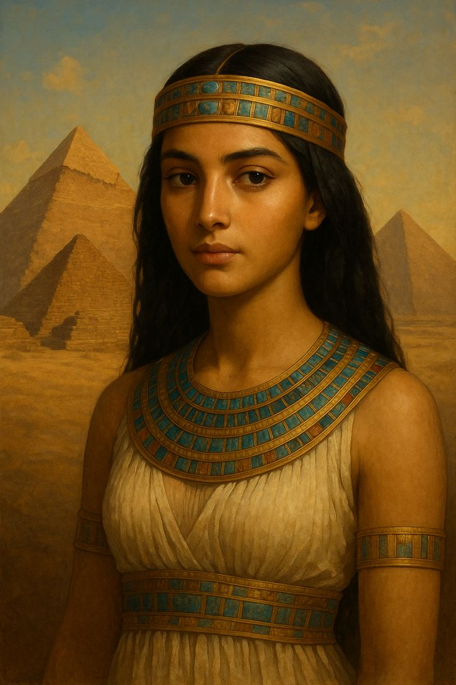
Hagar
ஆகார் (Hagar)
Hagar was an Egyptian servant of Sarai. She served in Sarai's household. In those days, it was a common practice in some cultures for a childless woman to have children through her female servant. However, God's promise was not to be fulfilled through Hagar, but through Sarah. At that time, Abraham and Sarah did not fully understand God's plan or the way in which He intended to fulfill His promise.
Hagar (ஆகார்) எகிப்தைச் சேர்ந்த சாராயின் வேலைக்காரி. அவர் சாராயின் வீட்டில் பணியாற்றி வந்தார். அக்காலத்தில் ஒரு பெண்ணுக்கு குழந்தை இல்லாவிட்டால், தனது வேலைக்காரியின் மூலம் குழந்தை பெறுவது சில சமூகங்களில் வழக்கமாக இருந்தது. ஆனால் தேவனுடைய வாக்குறுதி ஆகாரின் மூலம் அல்ல, சாராவின் மூலமே நிறைவேற வேண்டியிருந்தது. இதை அவர்கள் அப்போது முழுமையாகப் புரிந்துகொள்ளவில்லை.
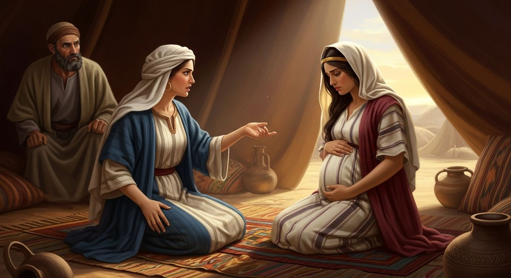
Sarai's Suggestion
சாராயின் ஆலோசனை
Sarai said to Abram, "The Lord has kept me from having children. Go to my servant Hagar; perhaps I can build a family through her." Abram agreed to Sarai's suggestion, and Hagar became pregnant. However, after Hagar conceived, she began to look down on her mistress, Sarai. This created tension and conflict between the two women. Sarai treated Hagar harshly, so Hagar fled into the wilderness. There, the Angel of the Lord appeared to Hagar and said, "Return to your mistress and submit to her." The angel also spoke about the son she would bear, saying, "You shall name him Ishmael, because the Lord has heard your misery." This showed that God saw Hagar's suffering, cared for her, and had a purpose for her son, even though His covenant promise would ultimately be fulfilled through Sarah.
சாராய், ஆபிராமிடம், "கர்த்தர் எனக்குப் பிள்ளை பெறும் பாக்கியத்தைத் தரவில்லை. ஆகையால் என் வேலைக்காரியான ஆகாரிடம் செல்; ஒருவேளை அவளின் மூலம் எனக்குக் குழந்தை கிடைக்கலாம்" என்று கூறினார். ஆபிராம் இந்த ஆலோசனையை ஏற்றுக்கொண்டார். இதன் மூலம் ஆகார் கர்ப்பமானார். ஆனால் கர்ப்பமான பிறகு, ஆகார் தனது எஜமானியான சாராயை அற்பமாக எண்ணத் தொடங்கினார். இதனால் சாராயுக்கும் ஆகாருக்கும் இடையே மனக்கசப்பு ஏற்பட்டது. சாராய் ஆகாரைக் கடுமையாக நடத்தினார். அதனால் ஆகார் வீட்டைவிட்டு வனாந்தரத்திற்குத் தப்பி ஓடினார். அப்போது தேவனுடைய தூதர் ஆகாரைச் சந்தித்து, "உன் எஜமானியிடம் திரும்பிச் சென்று அவளுக்குக் கீழ்ப்படிந்து இரு" என்று கூறினார். மேலும், அவளுக்குப் பிறக்கும் மகனைப் பற்றி, "அவனுக்கு இஸ்மவேல் என்று பெயரிடு; கர்த்தர் உன் துயரத்தைக் கேட்டிருக்கிறார்" என்று அறிவித்தார்.
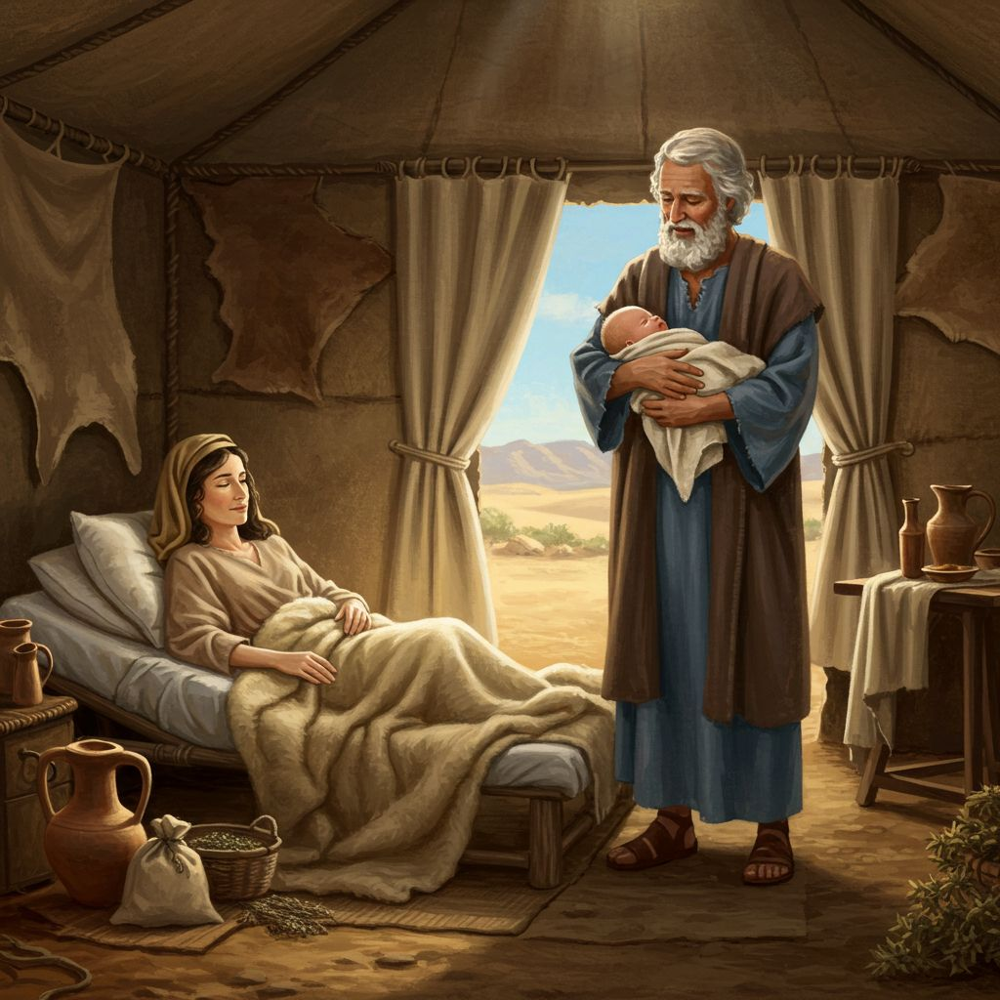
The Birth of Ishmael
இஸ்மவேலின் பிறப்பு
Hagar returned to Abram's household, and in time she gave birth to a son. The child was named Ishmael. The name Ishmael means "God hears" or "God has heard." Abram was 86 years old when Ishmael was born. He loved and cared for his son. However, God made it clear that Ishmael was not the heir of the covenant He had promised. Instead, Isaac, who would later be born through Sarah, would be the son of the promise and the heir through whom God's covenant would continue.
ஆகார் மீண்டும் ஆபிராமின் வீட்டிற்குத் திரும்பினார். பின்னர் அவர் ஒரு ஆண் குழந்தையைப் பெற்றார். அந்தக் குழந்தைக்கு Ishmael (இஸ்மவேல்) என்று பெயரிடப்பட்டது. "இஸ்மவேல்" என்ற பெயருக்கு "தேவன் கேட்டார்" அல்லது "தேவன் கேட்கிறார்" என்ற பொருள் உள்ளது. இஸ்மவேல் பிறந்தபோது ஆபிராமுக்கு 86 வயது இருந்தது. ஆபிராம் அவரை அன்புடன் வளர்த்தார். இருப்பினும், தேவன் முன்பே அளித்திருந்த உடன்படிக்கையின் வாரிசு இஸ்மவேல் அல்ல என்றும், பின்னர் சாராவின் மூலம் பிறக்கும் Isaac (ஈசாக்கே) வாக்குறுதியின் மகன் என்றும் தேவன் தெளிவாக அறிவித்தார்.
"God’s timing is perfect. What He promises, He will surely fulfill. Even when it seems impossible, He is working behind the scenes. When Abraham was 100 years old, and Sarah’s womb was barren, God still kept His word — and Isaac was born. That is faith — trusting God not because the situation makes sense, but because His Word never fails."